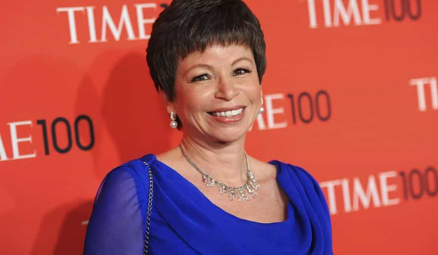
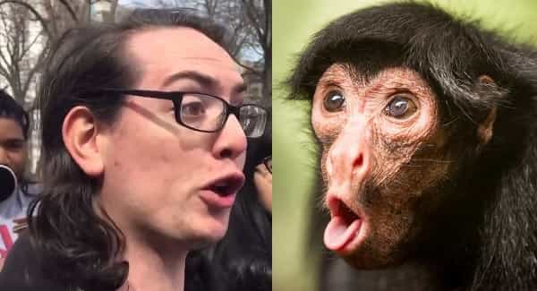

Comedian Roseanne Barr launched a firestorm with the following tweet about Valerie Jarrett:
muslim brotherhood & planet of the apes had a baby=vj
In the aftermath, ABC cancelled her show. She might now find herself as unemployable as celebrities busted for bad flirting.
Obama’s consigliere

Valerie Jarrett was born to two Americans living abroad in Iran, and spent her early childhood there. Perhaps that inspired the “Muslim brotherhood” part of Roseanne’s quip. If not, maybe it references pro-Muslim sentiment. Who the hell knows?
Valerie’s parents are Black, though not pure African. She doesn’t much look like it. Actually, it’s hard to describe her appearance. Even so, this makes the rest of the quip very politically incorrect. Was Roseanne really talking about Valerie’s ancestry, or was she merely implying a resemblance to Zira from the classic 1968 movie? Who the hell knows?
What’s more noteworthy is Jarrett’s radicalinski ancestry. Frontpage Mag describes some family members—including her husband Vernon—involved in front groups, one linked to some leading Weathermen. Other family connections included figures like Alfred Stern (a Soviet spy), Frank Marshall Davis (a Communist writer who was also Obama’s mentor, but speculated by some to be his biological father), among others. Still, I can’t come down on Valerie too hard for that, since I’m technically a red diaper baby too.
During Obama’s Chicago days—about which far more could be said—his future wife Michelle was hired by Jarrett at the mayor’s office. The three of them hit it off pretty well, friends since 1991. When The Lightworker was elected President, she became a top advisor. While he was acclimating to the new job and seemed rather stunned by it all, his friend Valerie was a comforting presence. Jarrett also had leadership roles in the White House Task Force to Protect Students from Sexual Assault and the White House Council on Women and Girls.
Following the Obama administration, she’s been staying active. Most notably, Jarrett joined Lyft’s Board of Directors. However, she’s been out of the news until now.
Roseanne’s damage control attempts

At first, Roseanne apologized, stating that it was a bad joke. That much is plausible; outrageous stuff is one of her shticks. Sometimes she overdoes it, like her awful attempt at singing the “Star Spangled Banner” in 1990. That one struck a sour note, but it didn’t end her career.
Apparently monkey business is more serious than mocking the national anthem. What she really meant by what she wrote might be a mitigating factor. Still, it won’t matter in the court of “public opinion”. Did she cross boundaries? Sure. Still, the reaction is disproportionate.
Later, she blamed her posting on Ambien. That would create sufficient plausible deniability. (There are anecdotes about airline passengers on sleeping pills who do things like sleepwalk naked or even urinate on their clothes.) However, since Roseanne first said it was a bad joke, it’s hard to change her plea to diminished capacity.
Virtue signaling doesn’t work

Other damage control efforts got weirder yet. The Daily Mail describes some of these:
‘Rod Serling wrote Planet of The Apes. It was about anti-semitism. That is what my tweet referred to-the anti semitism of the Iran deal. Low IQ ppl can think whatever they want.’
Further along those lines:
‘My childhood was spent growing up in an apartment house owned by my grandmother filled with survivors of Auschwitz and Belsen. I am an advocate 4 them & for all oppressed ppl. I will always be 4 FREEDOM FROM MOB MENTALITY,’ wrote Roseanne.
The previous night she had responded to a tweet about her Planet of the Apes interpretation by stating: ‘i dreamed about my childhood, growing up with survivors of nazi camps-.’
Clearly she’s grasping at straws, but the Ambien excuse was better than this.
She wrote: ‘I want u all2 know I’m fine. I’ve been using this time2 reflect & 2 gain insight on what I said & how it was misunderstood.. Needless2 say I’m NOT what people have accused me of! I’ve never practiced ‘RACISM’ in my entire life & never will.’
Barr then revealed her 2012 presidential campaign manager Thomas Muhammad is to be allowed to speak for her because, ‘he knows the work I have done in civil rights against racism ALL MY LIFE & understands my tweet was about Iran’s regime, not race’.
She’s trying desperately here, but being liberal and Jewish won’t get her out of this one. Even before political correctness began going full retard during the 1990s, the celebrated sportscaster Howard Cosell had an ambiguous monkey business gaffe too. His damage control speech was orders of magnitude more eloquent than Roseanne Barr’s efforts. Still, his career was toast.
She tried, but failed, to smooth things over with management:
‘I begged Ben Sherwood at ABC 2 let me apologize & make amends. I begged them not to cancel the show. I told them I was willing to do anything & asked 4 help in making things right. I’d worked doing publicity 4 them 4 free for weeks, traveling, thru bronchitis. I begged 4 ppls jobs,’ she tweeted.
‘He said: what were you thinking when you did this? I said: I thought she was white, she looks like my family! He scoffed & said: ‘what u have done is egregious, and unforgivable.’ I begged 4 my crews jobs. Will I ever recover from this pain? omg.’
This weird ethnic pecking order that’s been promoted for decades sometimes inflicts unexpected collateral damage. Things are going in unexpected directions, and in ways that the types who started this never anticipated. It may get worse yet for them. What the hell were they thinking?
Political correctness killed comedy

Roseanne Barr represents some things that ROK generally dislikes. She’s a liberal celebrity—though she’s showing some signs of disenchantment lately, and this latest mess might further her education. Sometimes she’s an obnoxious blowhard. She could stand to cut down on the snacking, but that’s the least of her worries lately. (For the record, I don’t hold her ancestry against her. Much to her credit, she doesn’t behave like Tim Wise.) Despite all this, Roseanne has become a tragic figure, a casualty of political correctness.
Saying something just once can ruin a career overnight. That’s true even for ordinary folks outside the public spotlight. This is the problem. It was her job to be witty and outrageous, but it’s impossible to do that effectively without crossing boundaries sometimes. Talking about ape men is highly taboo, despite leftist efforts to create them.
Roseanne was from a generation of liberal comedians who actually were funny. (I’ve heard some of her early routines; she had her moments.) Lenny Bruce caught heat for too-risqué performances, but after the 1960s, comedians could get away with joking about nearly anything. Lately, political correctness limits their options greatly, and sour snarling about Republicans is one of the few safe mainstays. Perhaps Roseanne forgot that it’s the Current Year. Even if Robin Williams was resurrected and said something like that, the SJWs would try to kill him all over again.
Perhaps the greatest lesson is that when a politically correct dogpiling happens, begging for mercy doesn’t work. The better response is to stay prepared and strike back. If Roseanne starts making fun of SJWs—a very easy target—she’ll gain many new fans.
Read More: SJWs Force British Comedian “Dapper Laughs” Off The Air